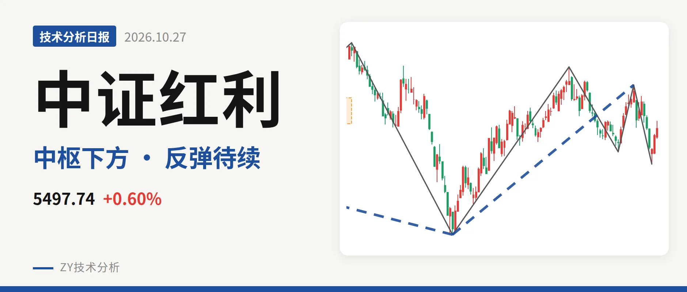
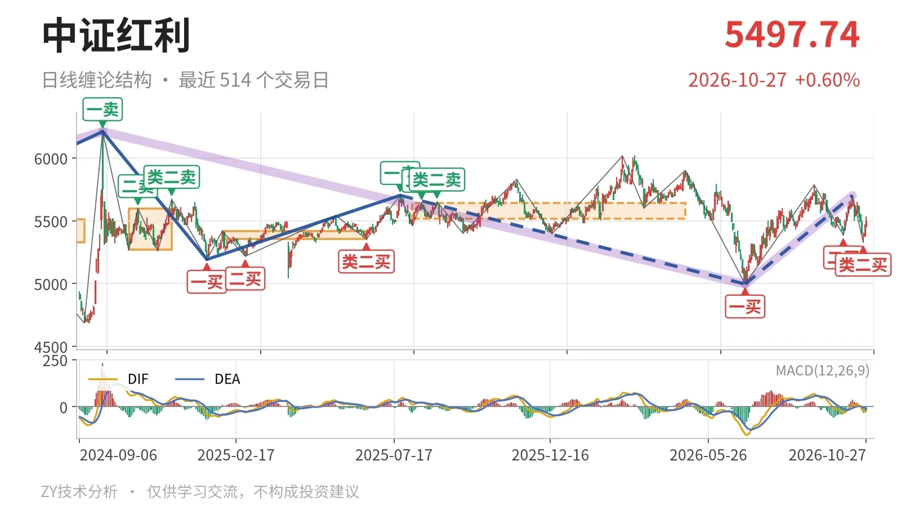
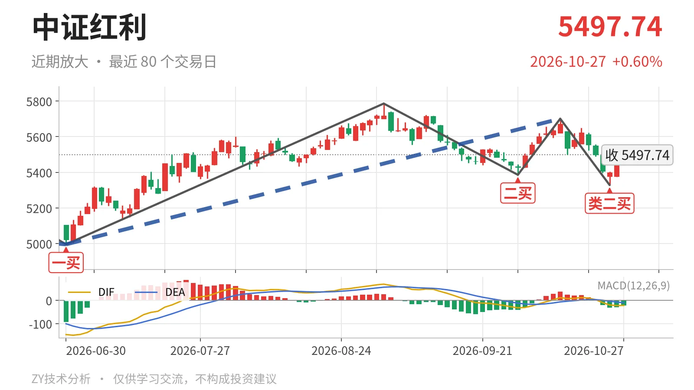

中证红利｜类二买后贴5518点，日线未回中枢

最近日线中枢 5518.46—5639.99点，收盘位于中枢之下
一句话：中证红利收在最近日线中枢下沿下方，类二买后反弹未站稳。
🌐 走势结构：更大级别震荡，日线仍是反弹段
更大级别上，2022年11月1日以来的三段走势互相重叠，2024年10月8日以来的下跌段没有结束，6月30日至10月14日的上涨段还在延续，只能先当下跌段内的反弹。日线线段里，2025年7月23日至2026年6月30日的下跌线段尚未走完，当前处在6月30日以来的上涨线段中。最近一笔10月14日至10月23日已经结束，10月26日以来两根K线只是未成笔的回升。这个组合定性为下跌段内的反弹，不是反转。

🧭 中枢位置：收在5518点下沿下方，中枢有上移
最近日线笔中枢为2025年8月4日至2026年4月30日的5518.46—5639.99点，中轴5579点。最新收盘5497.74点，低于下沿约21点。10月27日盘中最高5532.45点曾进入中枢，但收盘回到下沿之下，说明反抽未被日线承接。把该中枢与2025年1月27日至2025年6月23日的5353.68—5416.65点比较，位置是上移的，因此这一段回落更接近高位中枢震荡。
📍 买卖点：10月23日类二买成立，级别仍属日线笔
最近三个买点分别为6月30日一买4995.49点、9月29日二买5386.04点、10月23日类二买5328.30点。10月23日之后最低是5375.84点，未再破类二买，结构仍在。需要交代的是，这三个买点都在日线笔级别，没有改变2025年7月23日以来下跌线段尚未走完的状态。9月29日二买后的反弹高点5701.06点低于9月1日高点5786.14点，反弹重心没有抬高。

⚖️ 背驰：10月下探创新低，但力度没有放大
比较同向下跌笔，9月1日至9月29日绿柱面积561，DIF低点-32.7；10月14日至10月23日绿柱面积53，DIF低点-20.4。10月23日低点5328.30点低于9月29日低点5386.04点，价格新低，但指标没有新弱，属于“新低不新弱”。这次背驰对应10月23日类二买。当前日线MACD的DIF为-22.2，仍在零轴下，绿柱-22.9，所以这个背驰只支持反弹，不构成反转依据。
🔍 关键位置观察：5518点一线与5328点附近
上方先看5518点附近，正好是最近日线笔中枢下沿。若日线收盘重新站上5518点，则6月30日以来的上涨更可能演化为中枢扩展；若一直压在5518点下方，反弹结构仍不转强。再上看5640点附近，即中枢上沿，回到该位置上方，日线反弹才会升级。下方看5328点附近，若再跌破且绿柱面积较10月14日至10月23日放大，则10月23日类二买被破坏，下跌段会延续。整体看，有背驰托底，但未站上中枢下沿，结构中性偏弱。
⚠️ 本文为基于公开行情数据的缠论技术结构记录，由程序自动计算并生成，仅供学习交流，不构成任何投资建议。市场有风险，投资需谨慎。